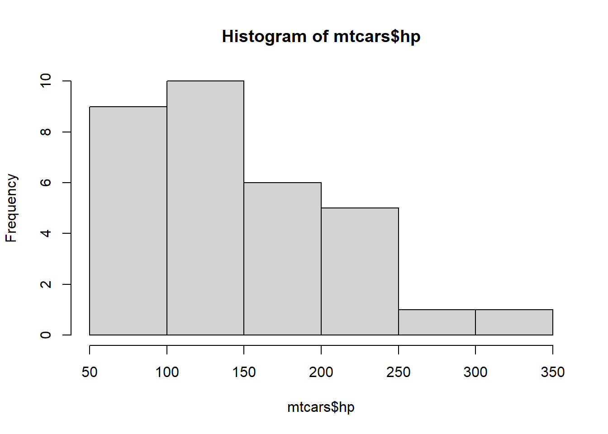
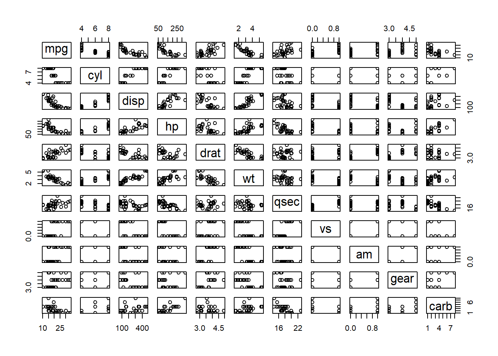

9 Preloaded data and mtcars
R comes with several built-in data sets, which are generally used as demo data for playing with R functions.
To see the datasets type:
9.1 Practicing with mtcars data set
This demonstration is based on the datasset mtcars.
- Read in
mtcars
data(mtcars)
head(mtcars)
#> mpg cyl disp hp drat wt qsec vs am
#> Mazda RX4 21.0 6 160 110 3.90 2.620 16.46 0 1
#> Mazda RX4 Wag 21.0 6 160 110 3.90 2.875 17.02 0 1
#> Datsun 710 22.8 4 108 93 3.85 2.320 18.61 1 1
#> Hornet 4 Drive 21.4 6 258 110 3.08 3.215 19.44 1 0
#> Hornet Sportabout 18.7 8 360 175 3.15 3.440 17.02 0 0
#> Valiant 18.1 6 225 105 2.76 3.460 20.22 1 0
#> gear carb
#> Mazda RX4 4 4
#> Mazda RX4 Wag 4 4
#> Datsun 710 4 1
#> Hornet 4 Drive 3 1
#> Hornet Sportabout 3 2
#> Valiant 3 1
tail(mtcars)
#> mpg cyl disp hp drat wt qsec vs am
#> Porsche 914-2 26.0 4 120.3 91 4.43 2.140 16.7 0 1
#> Lotus Europa 30.4 4 95.1 113 3.77 1.513 16.9 1 1
#> Ford Pantera L 15.8 8 351.0 264 4.22 3.170 14.5 0 1
#> Ferrari Dino 19.7 6 145.0 175 3.62 2.770 15.5 0 1
#> Maserati Bora 15.0 8 301.0 335 3.54 3.570 14.6 0 1
#> Volvo 142E 21.4 4 121.0 109 4.11 2.780 18.6 1 1
#> gear carb
#> Porsche 914-2 5 2
#> Lotus Europa 5 2
#> Ford Pantera L 5 4
#> Ferrari Dino 5 6
#> Maserati Bora 5 8
#> Volvo 142E 4 2- Some info about mtcars dataframe using function
colnames(),rownames(),summary()anddim()
colnames(mtcars)
#> [1] "mpg" "cyl" "disp" "hp" "drat" "wt" "qsec" "vs"
#> [9] "am" "gear" "carb"
rownames(mtcars)
#> [1] "Mazda RX4" "Mazda RX4 Wag"
#> [3] "Datsun 710" "Hornet 4 Drive"
#> [5] "Hornet Sportabout" "Valiant"
#> [7] "Duster 360" "Merc 240D"
#> [9] "Merc 230" "Merc 280"
#> [11] "Merc 280C" "Merc 450SE"
#> [13] "Merc 450SL" "Merc 450SLC"
#> [15] "Cadillac Fleetwood" "Lincoln Continental"
#> [17] "Chrysler Imperial" "Fiat 128"
#> [19] "Honda Civic" "Toyota Corolla"
#> [21] "Toyota Corona" "Dodge Challenger"
#> [23] "AMC Javelin" "Camaro Z28"
#> [25] "Pontiac Firebird" "Fiat X1-9"
#> [27] "Porsche 914-2" "Lotus Europa"
#> [29] "Ford Pantera L" "Ferrari Dino"
#> [31] "Maserati Bora" "Volvo 142E"
summary(mtcars)
#> mpg cyl disp
#> Min. :10.40 Min. :4.000 Min. : 71.1
#> 1st Qu.:15.43 1st Qu.:4.000 1st Qu.:120.8
#> Median :19.20 Median :6.000 Median :196.3
#> Mean :20.09 Mean :6.188 Mean :230.7
#> 3rd Qu.:22.80 3rd Qu.:8.000 3rd Qu.:326.0
#> Max. :33.90 Max. :8.000 Max. :472.0
#> hp drat wt
#> Min. : 52.0 Min. :2.760 Min. :1.513
#> 1st Qu.: 96.5 1st Qu.:3.080 1st Qu.:2.581
#> Median :123.0 Median :3.695 Median :3.325
#> Mean :146.7 Mean :3.597 Mean :3.217
#> 3rd Qu.:180.0 3rd Qu.:3.920 3rd Qu.:3.610
#> Max. :335.0 Max. :4.930 Max. :5.424
#> qsec vs am
#> Min. :14.50 Min. :0.0000 Min. :0.0000
#> 1st Qu.:16.89 1st Qu.:0.0000 1st Qu.:0.0000
#> Median :17.71 Median :0.0000 Median :0.0000
#> Mean :17.85 Mean :0.4375 Mean :0.4062
#> 3rd Qu.:18.90 3rd Qu.:1.0000 3rd Qu.:1.0000
#> Max. :22.90 Max. :1.0000 Max. :1.0000
#> gear carb
#> Min. :3.000 Min. :1.000
#> 1st Qu.:3.000 1st Qu.:2.000
#> Median :4.000 Median :2.000
#> Mean :3.688 Mean :2.812
#> 3rd Qu.:4.000 3rd Qu.:4.000
#> Max. :5.000 Max. :8.000
dim(mtcars)
#> [1] 32 11- To calculate the variance of weight:
var(mtcars$wt)
#> [1] 0.957379- To get the histogram of hp, the code below will produce a histogram:
hist(mtcars$hp)
- To calculate the quantiles by percent:
9.2 Excerises for you:
Find the minimum and maximum value of
mpgFind the mean and standard deviation of data variable
mpgWhat variable has a 3rd quartile value of 180.0?
Create and explain what this means

- Create and explain what this means
#> mpg cyl disp hp
#> mpg 1.0000000 -0.8521620 -0.8475514 -0.7761684
#> cyl -0.8521620 1.0000000 0.9020329 0.8324475
#> disp -0.8475514 0.9020329 1.0000000 0.7909486
#> hp -0.7761684 0.8324475 0.7909486 1.0000000
#> drat 0.6811719 -0.6999381 -0.7102139 -0.4487591
#> wt -0.8676594 0.7824958 0.8879799 0.6587479
#> qsec 0.4186840 -0.5912421 -0.4336979 -0.7082234
#> vs 0.6640389 -0.8108118 -0.7104159 -0.7230967
#> am 0.5998324 -0.5226070 -0.5912270 -0.2432043
#> gear 0.4802848 -0.4926866 -0.5555692 -0.1257043
#> carb -0.5509251 0.5269883 0.3949769 0.7498125
#> drat wt qsec vs
#> mpg 0.68117191 -0.8676594 0.41868403 0.6640389
#> cyl -0.69993811 0.7824958 -0.59124207 -0.8108118
#> disp -0.71021393 0.8879799 -0.43369788 -0.7104159
#> hp -0.44875912 0.6587479 -0.70822339 -0.7230967
#> drat 1.00000000 -0.7124406 0.09120476 0.4402785
#> wt -0.71244065 1.0000000 -0.17471588 -0.5549157
#> qsec 0.09120476 -0.1747159 1.00000000 0.7445354
#> vs 0.44027846 -0.5549157 0.74453544 1.0000000
#> am 0.71271113 -0.6924953 -0.22986086 0.1683451
#> gear 0.69961013 -0.5832870 -0.21268223 0.2060233
#> carb -0.09078980 0.4276059 -0.65624923 -0.5696071
#> am gear carb
#> mpg 0.59983243 0.4802848 -0.55092507
#> cyl -0.52260705 -0.4926866 0.52698829
#> disp -0.59122704 -0.5555692 0.39497686
#> hp -0.24320426 -0.1257043 0.74981247
#> drat 0.71271113 0.6996101 -0.09078980
#> wt -0.69249526 -0.5832870 0.42760594
#> qsec -0.22986086 -0.2126822 -0.65624923
#> vs 0.16834512 0.2060233 -0.56960714
#> am 1.00000000 0.7940588 0.05753435
#> gear 0.79405876 1.0000000 0.27407284
#> carb 0.05753435 0.2740728 1.00000000- Create a variable called
efficiencywhich is mpg divided by weight. Which car has the maxefficiencyand what is this value? - Which variable in this dataset has the greatest standard deviation?
- How many cars have 3 gears?
- How many cars get more than 17 mpg?